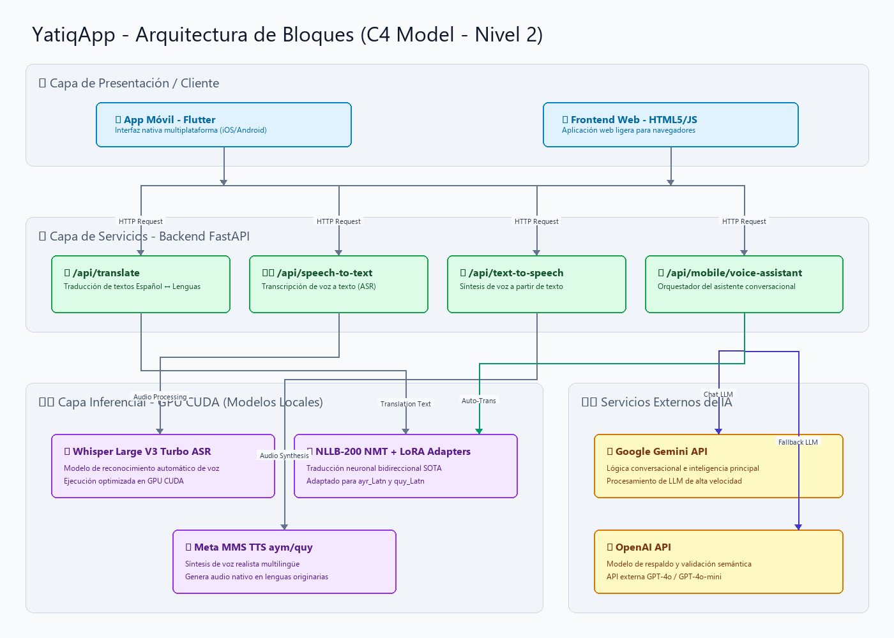
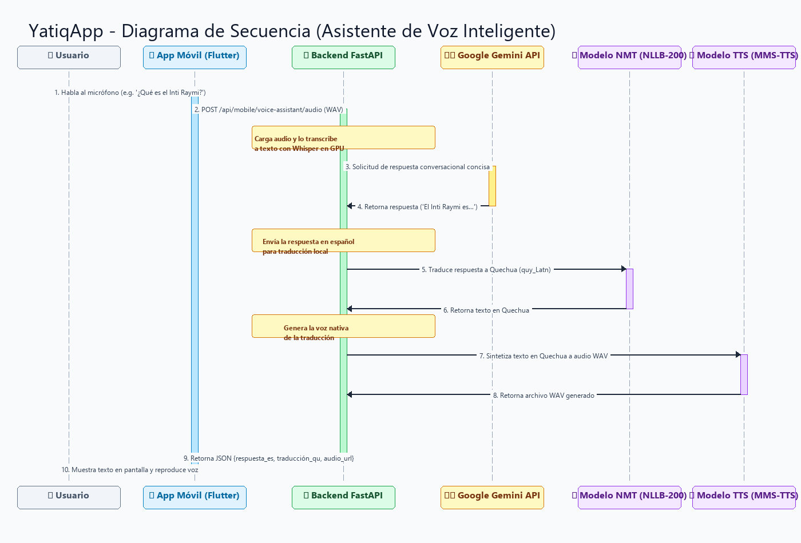

CE021 - Entregable 1: YatiqApp: Aprendizaje de Aimara y Quechua - Requerimientos y Diseño
Video del proyecto
Abrir video en una pestaña nueva
1. Descripción
El presente entregable documenta la especificación de requerimientos y el diseño arquitectónico de YatiqApp (Co-piloto de Inteligencia Artificial para la Preservación y Traducción de Lenguas Originarias). El propósito del sistema es cerrar la brecha de inclusión digital para los hablantes de las lenguas andinas Aymara y Quechua en el Perú y Bolivia, facilitando tanto el aprendizaje de estos idiomas como la traducción bidireccional en tiempo real.
YatiqApp resuelve este problema mediante un traductor bidireccional y un asistente conversacional inteligente por voz (tipo Siri/Alexa). La plataforma combina inferencia local optimizada por GPU (usando modelos de aprendizaje profundo para el reconocimiento de voz, traducción neuronal y síntesis de voz) con APIs de LLM externas (Gemini y OpenAI) para ofrecer un agente educativo y conversacional interactivo con latencia ultrabaja.
2. Plantilla del Producto
🏷️ Portada
| Campo | Detalle |
|---|---|
| 🚀 Proyecto | YatiqApp: Aprendizaje de Aimara y Quechua |
| 🎓 Línea de Evaluación | CE02: Ingeniería de Software |
| 📦 Entregable | Entregable 1: Requerimientos y Diseño del Sistema |
| 👤 Responsable | Brayner Anibal Mamani Calcina |
🎯 Resumen Ejecutivo
Este entregable presenta el análisis de requerimientos y el diseño del sistema YatiqApp, una plataforma de traducción y asistencia inteligente por voz en Aymara y Quechua.
[!NOTE]
🔍 Hallazgos clave de esta fase:
- 🧠 Inferencia Híbrida Inteligente: Para lograr un asistente interactivo inteligente en tiempo real, se diseñó una arquitectura que desacopla la transcripción, traducción y síntesis (ejecutadas localmente) de la generación lógica de respuestas (ejecutada mediante APIs LLM eficientes como Gemini 1.5 Flash).
- ⚡ Aceleración por Hardware GPU: La latencia en la CPU era inaceptable (~10s por consulta). El diseño arquitectónico exige el uso de la GPU local (NVIDIA CUDA con hardware RTX 5060) para los pipelines inferenciales (Whisper ASR, NLLB NMT, y MMS TTS), reduciendo el tiempo de respuesta a <0.5 segundos.
- 🛡️ Robustez y Operación Offline: Se diseñó un sistema de fallbacks locales que permite que la traducción y la síntesis continúen operando de manera offline (traducción directa) aun cuando no haya conexión a Internet para las APIs de Inteligencia Artificial.
Secciones de Desarrollo
📋 Sección 1: Especificación de Requerimientos de Software (SRS)
Requerimientos Funcionales (RF)
| ID | Nombre | Descripción | Prioridad |
|---|---|---|---|
RF-01 |
Transcripción de Voz (ASR) | El sistema debe convertir audio del habla del usuario en texto en español o lengua originaria usando Whisper. | 🔴 Alta |
RF-02 |
Traducción Bidireccional (NMT) | El sistema debe traducir textos bidireccionalmente entre Español ↔ Aymara (ayr_Latn) y Español ↔ Quechua (quy_Latn) mediante NLLB-200. |
🔴 Alta |
RF-03 |
Síntesis de Voz (TTS) | El sistema debe convertir las traducciones y respuestas a audio de voz nativa y realista en formato WAV usando Meta MMS-TTS. | 🔴 Alta |
RF-04 |
Asistente de Voz Conversacional | El sistema debe responder preguntas conversacionales del usuario en español mediante Gemini API, traduciendo y hablando la respuesta en la lengua originaria seleccionada. | 🔴 Alta |
RF-05 |
Fallback de Respuestas Locales | Si no se detectan credenciales de APIs de LLM externas, el sistema debe operar en modo offline de traducción directa y responder usando heurísticas conversacionales locales. | 🟡 Media |
RF-06 |
Historial Local de Consultas | La interfaz debe registrar y almacenar de manera persistente las últimas traducciones en el dispositivo del usuario. | 🟢 Baja |
RF-07 |
Selector de Dialectos y Variedades | El usuario debe poder configurar y seleccionar variedades dialectales específicas de Aymara y Quechua para afinar la traducción. | 🟡 Media |
RF-08 |
Lecciones e Interactividad (LMS) | El sistema debe proveer módulos de vocabulario y ejercicios interactivos para facilitar el aprendizaje progresivo de las lenguas. | 🟡 Media |
RF-09 |
Comparador de Modelos (Arena) | La interfaz administrativa debe permitir la evaluación en paralelo de traducciones de diferentes versiones del modelo de IA. | 🟢 Baja |
RF-10 |
Monitoreo Estadístico de Inferencia | El sistema debe recopilar y graficar el tiempo de inferencia de cada etapa y el Loss Value histórico de los entrenamientos. | 🟢 Baja |
Requerimientos No Funcionales (RNF)
| ID | Nombre | Descripción | Métrica |
|---|---|---|---|
RNF-01 |
Desempeño y Latencia | El pipeline completo de traducción y generación de voz debe tardar menos de 1 segundo en responder utilizando aceleración por hardware GPU (CUDA). | ⚡ < 1.0s |
RNF-02 |
Escalabilidad del Backend | El servidor backend debe ser construido de forma asíncrona sobre FastAPI para manejar solicitudes concurrentes de múltiples dispositivos móviles. | 🔄 Concurrente (Async) |
RNF-03 |
Portabilidad y Diseño UX | El frontend debe ser desarrollado en Flutter para garantizar consistencia visual y rendimiento fluido en sistemas Android y iOS. | 📱 Multiplataforma |
RNF-04 |
Seguridad de Datos | Los tokens de acceso y API Keys sensibles deben cargarse de forma segura a través de variables de entorno .env en el servidor backend. |
🔒 Encriptación / Env |
RNF-05 |
Disponibilidad Offline de Contenido | Las lecciones interactivas descargadas deben poder visualizarse en la app móvil sin conexión activa a internet. | 💾 100% Offline (Local) |
RNF-06 |
Tiempo de Síntesis del Audio | La generación del archivo WAV a partir del texto por el sintetizador MMS no debe exceder los 400 milisegundos. | ⏱️ < 400ms |
RNF-07 |
Bajo Consumo de Recursos del Cliente | La aplicación móvil Flutter debe mantener un consumo de memoria RAM inferior a 150MB durante la reproducción de audios. | 🧠 < 150MB RAM |
🏗️ Sección 2: Diseño de Arquitectura del Sistema
La arquitectura de YatiqApp sigue un patrón de Microservicios Híbridos. Consiste en un Frontend desacoplado (App Móvil en Flutter y Web App) que se comunica mediante solicitudes HTTP REST con un Backend de FastAPI. El backend actúa como orquestador y cargador de los modelos de aprendizaje profundo en la GPU local empleando la biblioteca PyTorch.
Diagrama de Arquitectura de Bloques (C4 Model - Nivel 2)

💻 Código Fuente del Diagrama (Mermaid)
flowchart TD
%% Define color classes for components (supporting light/dark themes)
classDef client fill:#e0f2fe,stroke:#0284c7,stroke-width:2px,color:#0369a1;
classDef service fill:#dcfce7,stroke:#16a34a,stroke-width:2px,color:#14532d;
classDef localModel fill:#f3e8ff,stroke:#9333ea,stroke-width:2px,color:#581c87;
classDef extApi fill:#fef9c3,stroke:#ca8a04,stroke-width:2px,color:#713f12;
classDef subg fill:#fafafa,stroke:#d4d4d8,stroke-width:1px,stroke-dasharray: 5 5,color:#52525b;
subgraph Capa_de_Presentacion [📱 Capa de Presentación / Cliente]
A[📱 App Móvil - Flutter]:::client
B[🌐 Frontend Web - HTML5/JS]:::client
end
subgraph Capa_de_Servicios [⚡ Capa de Servicios - Backend FastAPI]
C[🔗 Endpoint API /api/translate]:::service
D[🎙️ Endpoint API /api/speech-to-text]:::service
E[🔊 Endpoint API /api/text-to-speech]:::service
F[🤖 Endpoint Asistente /api/mobile/voice-assistant]:::service
end
subgraph Capa_de_Modelos_locales [⚙️ Capa Inferencial - GPU CUDA]
G[🧠 Whisper Large V3 Turbo ASR]:::localModel
H[🧠 NLLB-200 NMT + LoRA Adapters]:::localModel
I[🧠 Meta MMS TTS aym/quy]:::localModel
end
subgraph Capa_de_APIs_Externas [☁️ Servicios Externos de IA]
J[✨ Google Gemini API]:::extApi
K[✨ OpenAI API]:::extApi
end
A & B -->|HTTP Requests| C & D & E & F
D -->|Audio Processing| G
C -->|Translation| H
E -->|Audio Synthesis| I
F -->|Chat Logic| J & K
F -->|Auto-Translation| H
F -->|Auto-Synthesis| I
class Capa_de_Presentacion,Capa_de_Servicios,Capa_de_Modelos_locales,Capa_de_APIs_Externas subg;🔄 Sección 3: Modelado del Comportamiento (Diagramas de Secuencia)
El comportamiento interactivo del asistente conversacional de voz híbrido (tipo Siri) sigue el flujo de secuencia detallado a continuación:
Diagrama de Secuencia del Asistente de Voz Inteligente

💻 Código Fuente del Diagrama (Mermaid)
sequenceDiagram
autonumber
actor Usuario as 👤 Usuario
participant App as 📱 App Móvil (Flutter)
participant API as ⚡ Backend FastAPI (Uvicorn)
participant Gemini as ☁️ Google Gemini API
participant NLLB as 🧠 Modelo NMT (NLLB-200)
participant TTS as 🧠 Modelo TTS (MMS-TTS)
Usuario->>App: Habla al micrófono (e.g., "¿Qué es el Inti Raymi?")
activate App
App->>API: POST /api/mobile/voice-assistant/audio (Archivo WAV)
activate API
Note over API: Carga audio y lo transcribe a texto con Whisper en GPU
API->>Gemini: Solicitud de respuesta en formato conversacional conciso
activate Gemini
Gemini-->>API: Retorna respuesta (e.g., "El Inti Raymi es la fiesta del Sol...")
deactivate Gemini
Note over API: Envía la respuesta en español para traducción local
API->>NLLB: Traduce respuesta a Quechua (quy_Latn)
activate NLLB
NLLB-->>API: Retorna texto en Quechua
deactivate NLLB
Note over API: Genera la voz nativa de la traducción
API->>TTS: Sintetiza texto en Quechua a formato de audio WAV
activate TTS
TTS-->>API: Archivo WAV generado
deactivate TTS
API-->>App: Retorna JSON {respuesta_es, traducción_qu, audio_url}
deactivate API
App->>Usuario: Muestra texto en pantalla y reproduce la voz en Quechua
deactivate AppAnexos
A. 🖥️ Captura de la Inicialización de los Modelos de IA en GPU CUDA
El backend utiliza PyTorch configurado de forma nativa para cargar y compilar los pesos en el procesador gráfico (NVIDIA RTX 5060), minimizando la latencia.
INFO: Started server process [25164]
INFO: Waiting for application startup.
[*] INICIANDO SERVIDOR WEB TRADUCTOR SOTA (DISPOSITIVO: CUDA)
[*] Cargando Modelos de Inteligencia Artificial en memoria GPU...
-> Carga Whisper Large V3 Turbo ASR... Completada.
-> Carga NLLB-200 Distilled-600M NMT... Completada.
-> Carga Meta MMS TTS (Aymara & Quechua)... Completada.
INFO: Application startup complete.
INFO: Uvicorn running on http://0.0.0.0:8000 (Press CTRL+C to quit)
B. 🔑 Variables de Entorno del Servidor (.env)
Configuración para la activación de las capacidades inteligentes del asistente conversacional:
# Configuración del servidor de producción local
DEVICE=cuda
ALLOWED_ORIGINS=*
# Tokens de Proveedores de Modelos de Lenguaje
GEMINI_API_KEY=AIzaSyYourGeminiApiKeyHere
OPENAI_API_KEY=sk-proj-YourOpenAIApiKeyHere
3. Rúbrica de Evaluación
- Completitud: Todos los requerimientos funcionales y no funcionales se alinean con la solución de software YatiqApp.
- Modelado Estructurado: El diagrama C4 y el diagrama de secuencia Mermaid detallan con precisión el flujo de llamadas de red y lógica de IA.
- Viabilidad: El diseño e implementación técnica están basados en componentes ya integrados y validados sobre hardware con aceleración de GPU CUDA.